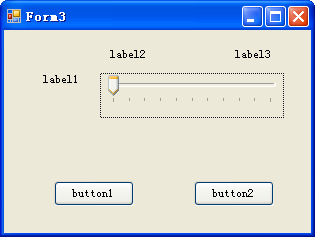
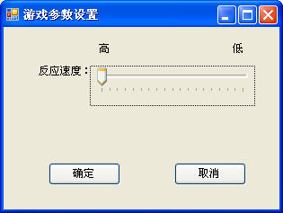

1) 从工具箱中找到MenuStrip，拖到窗体Form1上。MenuStrip也是不可见控件。
2) 键入第1个菜单项名字为“帮助”，第2个菜单项名字为“游戏设置”。
3) 打开第1个菜单项“帮助”属性页，将其“Name”属性改为“mainMenu_Help”， 确认其“Text”属性为“帮助”。如果第一行图片控件挡住了菜单，就将所有图片控件往下一点。此处也可以看出菜单类型的说明影响游戏界面的美观，以后可以用右边面板，工具栏，右键菜单等替代。
4) 为“帮助”菜单添加两个子菜单，分别键入名字“游戏说明”和“关于”
i. 第1个子菜单其“Name”属性改为“subMenu_Help_Info”， 确认其“Text”属性为“游戏说明”，设置“ShortcutKeys”属性为“Ctrl+I”，“ShowShortcutKeys”属性为“true”；
ii. 第2个子菜单其“Name”属性改为“subMenu_Help_About”， 确认其“Text”属性为“关于”。
5) 打开第2个菜单项“游戏设置”属性页，，将其“Name”属性改为“mainMenu_Settings”， 确认其“Text”属性为“游戏设置”。
6) 为“游戏设置”菜单添加两个子菜单，键入名字“反应速度”，设置“ShortcutKeys”属性为“Ctrl+T”，“ShowShortcutKeys”属性为“true”；
7) 在设计视图分别点击“游戏说明”、“关于”、“反应速度”3个子菜单项。在Form1类中自动添加生成3个空方法subMenu_Help_Info_Click、subMenu_Help_About_Click和subMenu_Settings_Speed_Click。
暂时简化处理，用MessageBox 来显示游戏说明和信息，添加内容后的subMenu_Help_Info_Click和subMenu_Help_About_Click方法如源代码32所示。1) 在memorychecker 项目下新建窗体 Form3;
2) 从工具箱拖3个标签（Lable）、1个滑动条（TrackBar）、2个按钮(Button)到Form3，布局如图CSG28所示。

3) 改变各控件的属性，如表格3所示
| 控件 | 属性 | 值 | Label1 | Text | 反应速度： | Label2 | Text | 高 | Label3 | Text | 低 | Button1 | Text | 确定 | Button2 | Text | 取消 | TrackBar1 | Minimum | 1 | TrackBar1 | Maximum | 10 | Form3 | Text | 游戏参数设置 |

4) 为了保存设置，在CommonSH类中增加一个变量，即源代码4的第27行之后添加如源代码33所示的一行。
5) 在Form2的构造函数末尾中添加对trackBar1的初始化，即在Form3显示时，滑动条指到它的值所对应的位置。如源代码34所示
6) 在Form2中分别双击button1和button2，添加Click事件处理；如源代码35所示
7) 在Form1中为subMenu_Settings_Speed_Click方法添加内容，改动后的方法如源代码36所示。
1) Form1中新加一个设置timer1的Interval的公共方法setTimer1
2) 为Form3增加一个Form1类的变量paretfrm, 在Form3中的构造函数中进行初始化
3) 改变Form3的构造函数，增加一个Form1类的参数paretfrm
4) 在Form1的菜单点击事件处理中，将Form1类对象由Form3的构造函数传递给Form3对象。
Form1中新添加的setTimer1方法和改动后的subMenu_Settings_Speed_Click方法如源代码 37 所示。